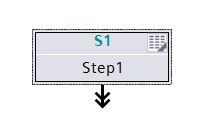
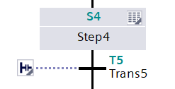
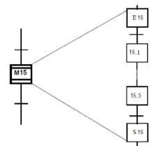
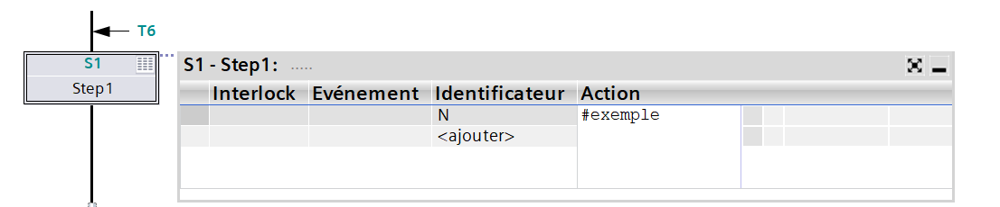
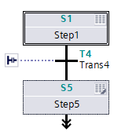
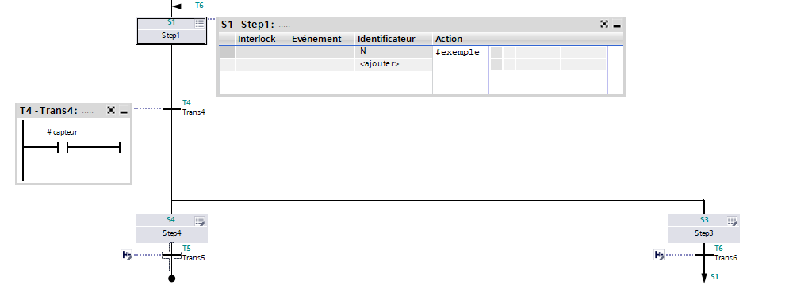
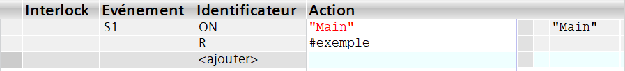

Quand, Où, Pourquoi ?
Le Graphcet, également appelé SFC (Sequential Function Chart), est utilisé lorsque le fonctionnement d’un automatisme doit être décrit sous forme de séquence d’étapes et de transitions. Il permet de représenter clairement l’enchaînement des actions dans le temps.
On utilise le Graphcet dans la conception et l’analyse des automatismes industriels, notamment pour les machines fonctionnant par cycles. Il est très répandu pour décrire le comportement des systèmes tels que les portes automatiques, les machines d’usinage, les lignes de production ou les processus séquentiels.
Règles de GRAFCET
Un pas est dit actif lorsqu’il est validé, c’est-à-dire lorsque le jeton logique est présent sur ce pas ( representé en général par un point •). Lorsqu’un pas est actif, les actions qui lui sont associées peuvent s’exécuter. Dans une séquence simple, un seul pas est actif à la fois (sauf en parallèle).
Les transitions sont franchissables uniquement si leurs conditions sont validé
Lorsque la transition est franchie, le pas précédent devient inactif et le pas suivant devient actif.
Type de Pas
Pas initialPoint de départ du GRAFCET. Il est actif dès la mise sous tension et est représenté par un double encadrement.
Pas initial sur Tia Portal
Pas standard du GRAFCET. Il devient actif après le franchissement de la transition précédente.
Pas classique sur Tia Portal
Représente un sous-GRAFCET. Il permet de simplifier un diagramme complexe en regroupant plusieurs pas.
Pas macro (pas de pas macro direct sur Tia Portal)
Pas auquel sont associées une ou plusieurs actions exécutées selon leur type.
Pas Action sur Tia Portal
Séquence de branches
Passage d’une action à l’autreSuccession de pas reliés par des transitions permettant l’enchaînement des actions.
Passage d'un step a un autre sur Tia Portal
Plusieurs branches se rejoignent en une seule. La transition est validée (si elle n'a pas d'autres conditions) seulement si tous les pas précédents sont actifs :
DivergenceUne branche se sépare en plusieurs branches :
- Divergence exclusive : une seule branche active
- Divergence parallèle : plusieurs branches actives simultanément
Divergence parallele suivis d'une Convergence sur Tia Portal
Permet de passer directement d’un pas à un autre non consécutif. Utilisé pour les boucles ou les retours.
Actions
Une action est définie par :
- Un nom (ex : moteur, vérin, lampe)
- Un type
- Une durée ou une condition éventuelle
Pour définir les actions autre que des expressions booléennes simples ou des programmes plus complexe. On utilise très souvent pour les définir ST ou le LD
Type d’action
N (Normale)Action normale : l’action est active tant que le pas est actif. Exemple : MOTOR := TRUE pendant toute la durée du pas.
S (Set)Set : met la variable ou le bit à 1 et la conserve même si le pas n’est plus actif, jusqu’à ce qu’un Reset soit exécuté.
R (Reset)Reset : met la variable ou le bit à 0. Utilisé pour désactiver une action de type Set.
D (Delay / Temporisé)Delay : l’action est activée après un délai spécifié (ex. T#5s). Utile pour temporiser des signaux.
L (Limitée / Limité)Limitée : l’action est active pendant une durée limitée, même si le pas reste actif.
Il en existe de nombreux autres mais ils dépendent du constructeur logiciel.
Transition
Une transition est associée à une réceptivité exprimée par une condition logique. On est obligé d'en mettre entre deux pas, de la même manière que les actions on peut les exprimer et LD ou en ST.
Plusieurs actions
Un même pas peut contenir plusieurs actions. Toutes les actions associées s’exécutent selon leur type tant que le pas est actif.
Graphcet avec un saut de T6 à S1 et des exemples visuels de transition et action sur Tia Portal
On voit ici que la transition est en LD et est un contact normalement ouvert qui depend d'une variable capteur. De même l'action liée à Step1 à pour identificateur N, la variable booléenne exmple passe donc à 1 tant que le step est active.
Exemple d'action multiple sur Tia Portal
On aurait aussi pu appeler le programme Main et en plus mettre à 0 indéfiniment exemple